|
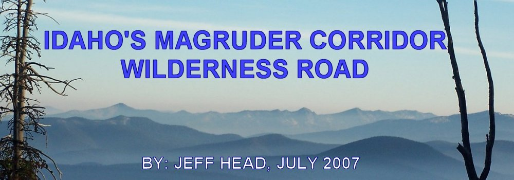
In the mid 1990s, while living in southwest Montana, I did a lot of hunting and exploring around the mountains in the area. This included those ranges bordering the Beaverhead, Ruby, Red Rock, and Big Hole Rivers. I also got up on the Bitteroot and over the mountains onto the Selway which is where this web page and story has its origins. I learned of a road out of Darby, Montana that followed the Nez Perce Indian trail over the monuntains into Idaho, which connected to a primitive road that continued across the Selway-Bitterroot and Frank Church - River of no Return Wilderness areas over near Elk City, Idaho. I decided I wanted to travel this road, so I gathered up my gear and told my wife where I was going and started off. I got over to the Selway River only to find the wilderness road closed. This was during the Clinton administration and there were quite a lot of such road closures during that era.
Fast forward to July of 2007. Now living in southwest Idaho, I was recently asked by a friend if I had ever taken the Magruder Corridor Road in Idaho. I told him did not know the road, but when he described it coming off of the Elk City road and going over to Montana across the Selway, I immediately thought of my failed attempt twelve years earlier. It is the same road. This web page is dedicated to the two day trip that my 17 year old son and I made on July 21st and 22nd of this year. I wish we had had two weeks.
The Magruder Road itself, FS (Forest Service) 468, runs from just south of the old Red River Ranger Station in Idaho, over to Darby, Montana. About 120 miles of no services whatsoever. The actual wilderness road is about 70-80 miles, starting from FS 222 just south of the old Red River Ranger Station, to the start of pavement climbing away from the Selway River into the Bitterroot Mountains. This pavement is shortlived, maybe ten miles, and then reverts back to gravel, but from that point on it is in very good shape and plenty wide enough for two cars.
The wilderness road is a rough, one lane road, with some parts primitive, but nothing that any well maintained four wheel drive vehicle with good tires (and I would suggest 10 ply) and suspension cannot handle. The spurs, or side roads, however, are very primitive where good clearance, good tires, and a heavier frame are required for the four wheel low driving. Carry a good spare or two on this trip.
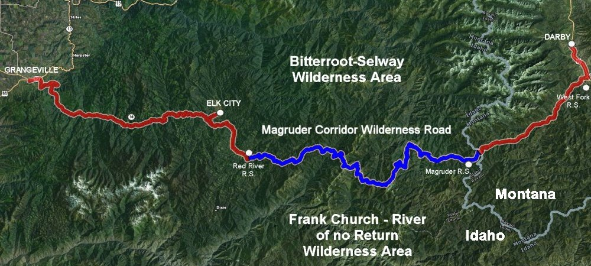 The full route from Grangeville, ID to Darby, MT. Aproximately 200 miles, 120 of which is with no services, 90 miles of that is rough wilderness road. We started out at Grangeville, Idaho (and I presume that the reader can get there as it is on a major, north south US Highway, US 95), and then taking ID 13 from there, east towards Kooskia. Idaho. About two miles east of downtown Grangeville, you will see a sign on the right hand side of the road indicating the road to Elk City. This is Poor Farm Road. It is paved. Turn right onto this road and travel about two miles until it intersects Mt. Idaho Grade Road. Turn left on this paved road which will ultimately take you, swirtchbacking down the grade, to the South Fork of the Clearwater River. This is about a seven mile drive until it intersects ID 14 on the South Fork of the Clearwater. You will bear slightly right at this intersection and then follow ID 14 all the way to Elk City, about 40 miles. This is a beautiful route, all paved. (Note: You could take ID 13 out of Grangeville all the way to its intersection with ID 14, but this ads a good twenty miles to your travel with a big loop along the South fork of the Clearwater.)
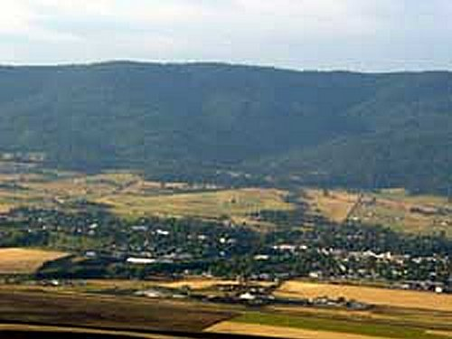 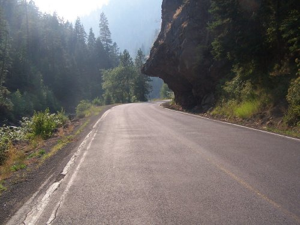 Grangeville, Idaho, and a picture along ID 14 traveling to Elk city. We traveled all the way into Elk City to get some final provisions. This is a rustic, small, "outback" town known for its gold rush days in the Idaho territory in the 1860s. There's a big sign in town regarding the old Nez Perce indian trail which traveled into Montana which the gold miners used to travel between Elk City, ID and Virginia City, MT. Elk City later became known as a center for the north-central Idaho logging and mining industries (which is still lends itself to), and now as an attraction for those wishing to get into Idaho's mountainous and wilderness areas. We picked up some extra water, some toilet paper, beef jerky, etc. for our two day trip and then turned back down ID 14, the way we had come.
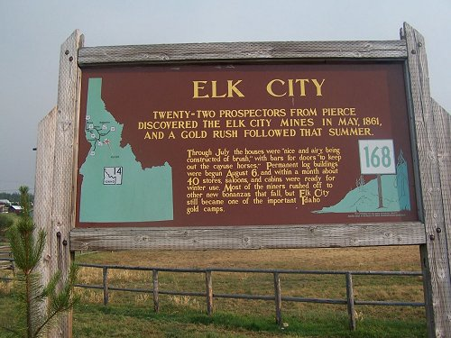  Sign describing the Elk City gold rush and a picture of Elk City. Traveling back towards Grangeville about 3 miles, you come to the Red River Road which is also FS 222. Turn left here, it is a good paved road. (Note: You could have turned right on this road coming out of Grangeville, avoiding Elk City altogether). Follow this road along the Red River for 16 miles until you reach the Old Red River Ranger Station. This is a beautiful drive along the river, with wonderful scenery and back country farming and ranching. There were fires in the area so the old Ranger Station was being used as a staging point.
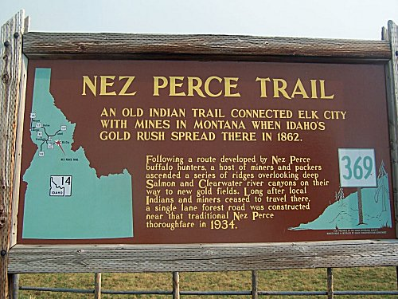 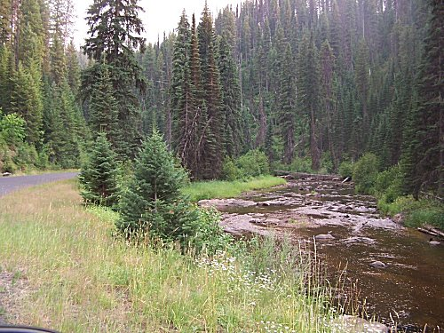 Sign describing the Nez Perce trail and its history and a view of the river along the Red River Road (FS 222).
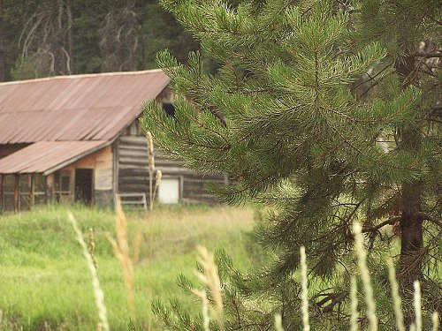 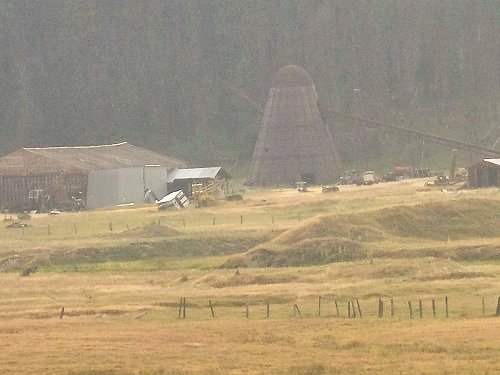 An old mining camp along the river and farming operations in the back country.
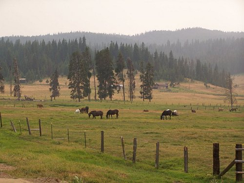 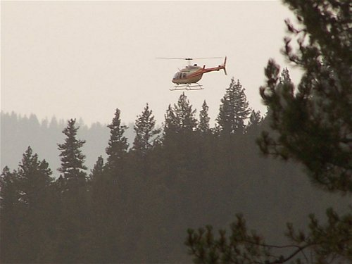 Ranching in the back country and a Helo lands at Red River Ranger Station. Continue following FS 222 (bear right at the old Red River Ranger Station) and just south of the old ranger station the entrance to Magruder Corridor Road (also FS 468) is clearly marked on the left. To this point this narrative has been busy just getting you to this point. Now is where the fun starts as we turn left onto this gravel road.
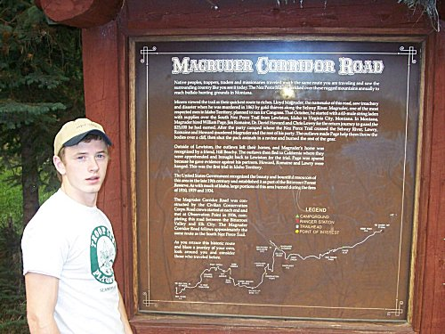 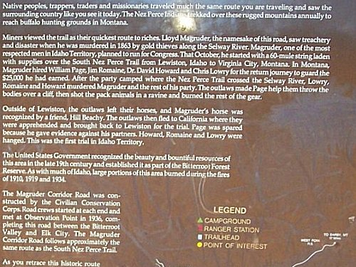 My son, Jared, by the sign for the Magruder Corridor Road and a close up of the information on the sign.
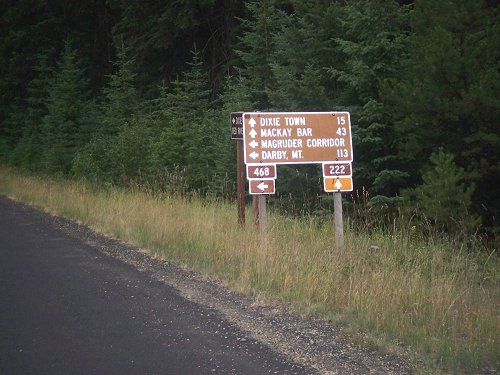 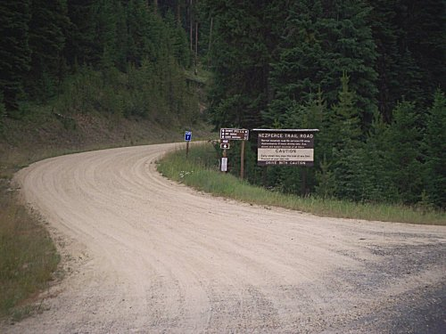 Road sign for the turnoff onto the Magruder Road and the entry to the Magruder Road off of FS 222. Once on the Magruder Corridor Road, the road climbs out of the Red River Valley. There are many great views of the valley and surrounding mountains as you climb. We found the pictures especially beautiful with the smoke and haze in the sky as the sun passed its zenith and shone through this smoke in the western sky. Here the road climbs toward Mountain Meadows and ultimately to 14-mile Tree and the trailhead there which includes a toilet, information board, stock feeding rack, and a stock hitching rail.
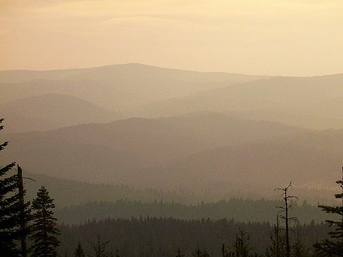 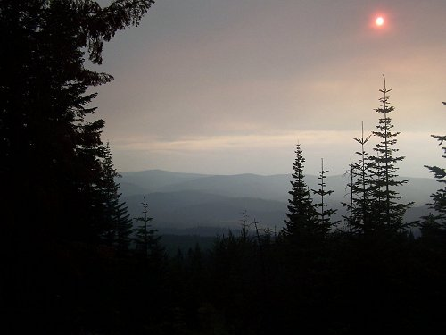 Climbing out of the Red River Valley, beautiful vistas (if a bit smoky and hazy), greeted us.
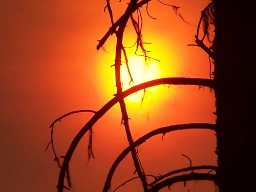 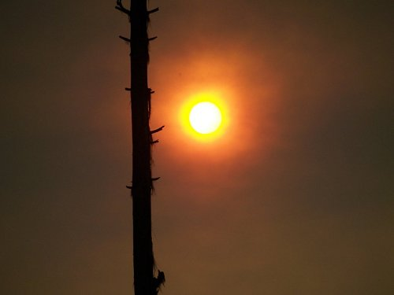 Zoomed in pictures of the sun through the smoke and haze were particularly pretty.
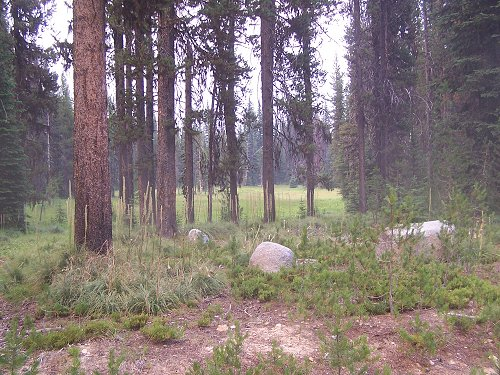 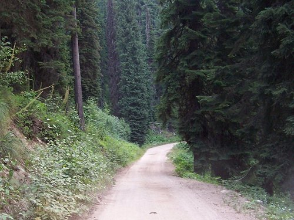 Near the top of the first divide we came upon Mountain Meadows which includes a camp site. The road wound on beyond Mountain Meadows.
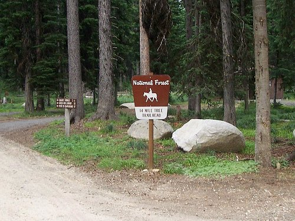  Below Mountain Meadows, at 14 Mile Tree, there is a trailhead and there are good facilities for those using mules or horses to traverse the back country. Beyond 14 Mile Tree, the road became noticable more narrow and lacked the gravel maintenance it had been receiving to that point. From this point on, the road was dirt and much more rough. Dropping further down from 14 Mile Tree, we came across Granite Springs campground at the bottom of that drainage. The campground spans both sides of the road and includes good camp sites, pit toilets, drinking water, picnic tables, and water for stock. There were five or six camper trailers here. The road continued on past the campground and climbed over another divide where the Elk Mountain Road spur (FS 285) branched off for four miles to Green Mountain Lookout. That road looked to be in good shape and not too rough, but we continued on decidiing to reach Burnt Knob Lookout before dark. From the Elk Mountain Road, the road dropped steeply to Bargamin Creek where there is a good bridge across the creek. Down in this basin lies Poet campground. It has four campsites, but we passed them by, determined to reach Burnt Knob Lookout before dark, although we did stop to hike around in some rock outcroppings. The road climbed steeply for about eight miles beyond Bargmin Creek, where we reached the Burnt Knob Road (FS 468-C). This was clearly a very rough, primitive road, requiring good four wheel drive and adequate clearance. With our Z71 off-road package, we were well prepared and so we took the 1.5 mile road to the top...arriving there well into dusk. We ate some dinner of jerky, chips, and soft drinks and water and then turned in for the night, sleeping in the truck because the mosquitos were exremely bad.
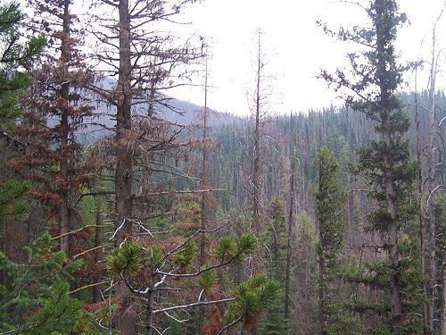 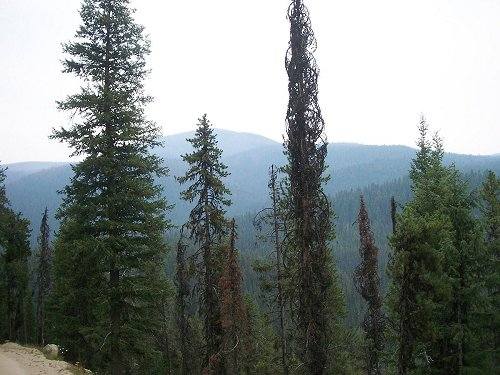 The forest scenery above Granite Springs was very beautiful.
 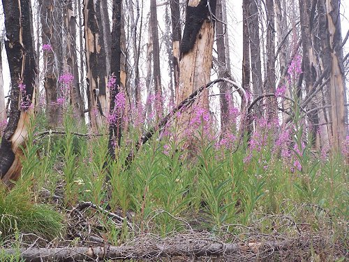 We came across one area that had been burned over by a fire recently and took a picture of the new growth springing up.
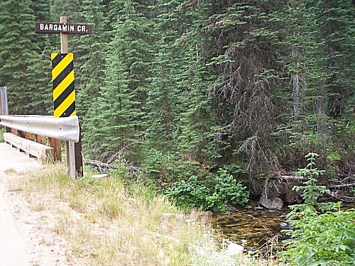 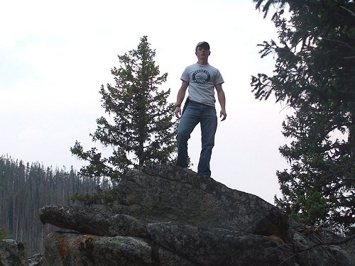 We dropped steeply down to Bargamin Creek and Poets Campground. There is a good bridge across the creek there. We did a little hiking.
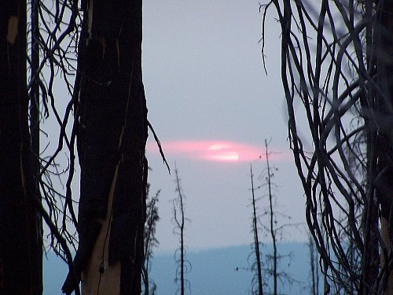 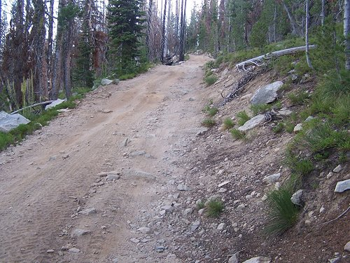 Climbing above Bargamin Creek, we got a good view of the sun sinking in the west before arriving at the rough, primitive Burnt Knob Road.
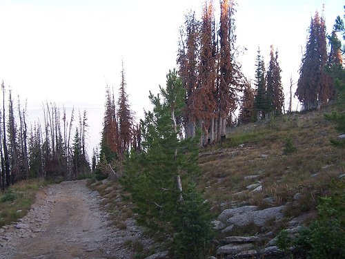 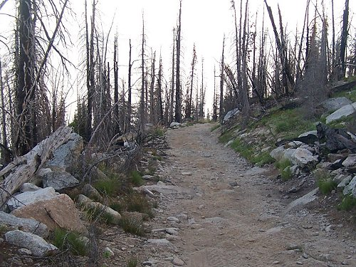 Burnt Knob Road is extremely rough and primitive requiring 4-wheel low, good clearances and good suspension.
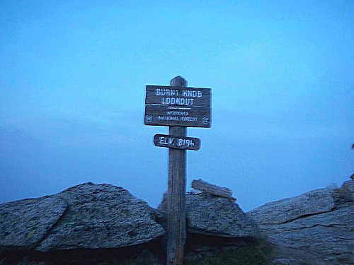 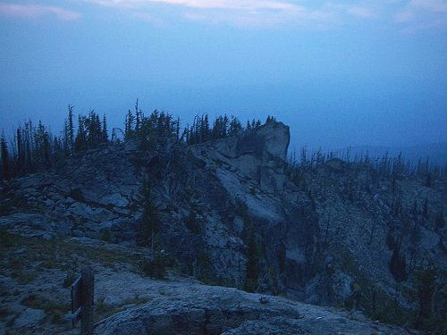 We reached the top of Burnt Knob as it was getting dark. 8196 feet and very rough, beautiful terrain, where we slept for the night. The sun rise at Burnt Knob greeted us with much clearer air and absolutely amazing scenery. There were three lakes below the Knob and amazing wilderness mountain vistas all around. We spent several hours hiking, exploring, and taking pictures before starting down the rough road back to the Magruder Corridor later in the morning.
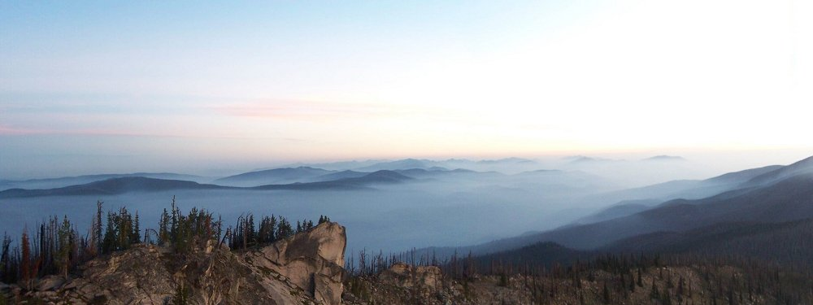 The wide angle morning vista just before sunrise from Burnt Knob was speactular and amazing.
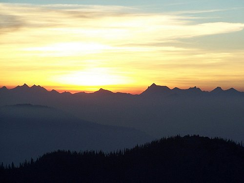  Sunup as viewed from Burnt Knob was a beautiful and awe inspriring experience.
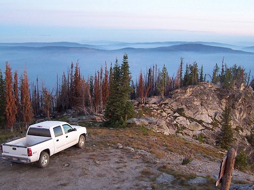 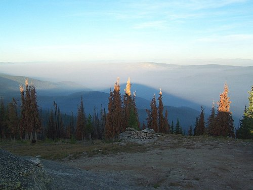 The truck was parked just below the actual lookout and the shadow of Burnt Knob that morning was another of many speactular photogrpahs.
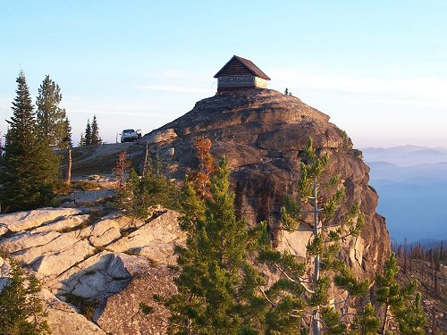 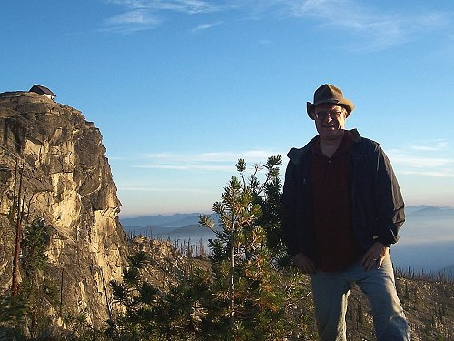 The lookout itself sits on the absolute top of a rock promitory as seen from a distance, and with me in the foreground.
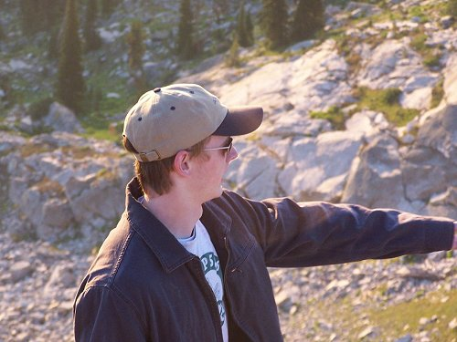 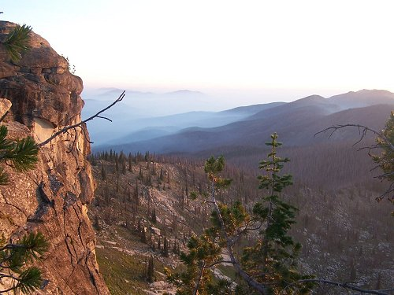 My son, Jared, points out some particulars of the scenery and another vista from Burnt Knob.
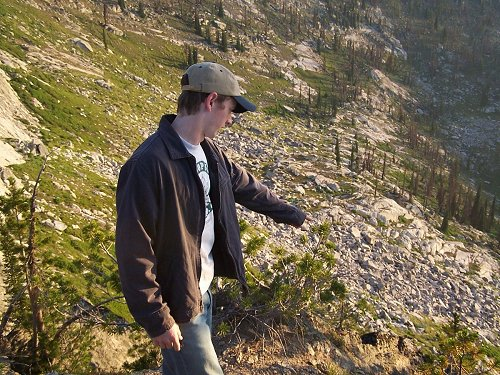 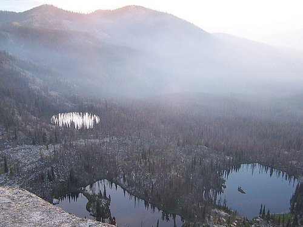 Jared points out a possible route to hike to the top of Burnt Knob from the three beautiful lakes below.
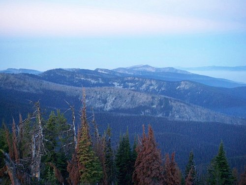 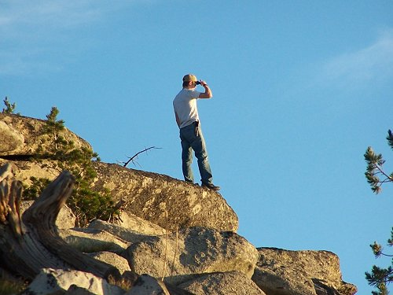 More beautiful vista scenery from Burnt Knob as Jared takes one more long look before we left.
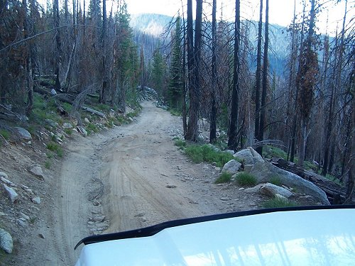 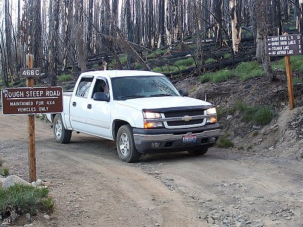 The rough road down from Burnt Knob back to the turnoff onto the Magruder corridor. After leaving Burnt Knob, the road stays high, crossing over Dry Saddle (7920 ft), which offered many spectacular and very beautiful vistas. Then the road dropped into the Sabe Creek drainage and immediately began climbing again, over Horse Heaven Saddle (7070 ft) and then up towards Salmon Mountain. There is a one mile trail off the road to the lookout on Salmon Mountain which stands at almost 9000 ft. On Salmon Mountain is one of the few places in North America where the subalpine larch grows. It is the only deciduous confierous tree whose needles turn yellow and fall off in the fall. Other confers are true "ever greens". This entire stretch of the road is the roughest part on the Magruder Corridor road itself (not including the side roads). Many places offer no chance for passing, meaning cars or truck have to back out to the nearest place wide enough to pass. We blew a tire along this stretch and had to change it (wishing at that point that we had had 10 ply tires), becoming very aware at that point that we had no more spares. After Salmon Mountain, the road begins dropping down towards the Selway River.
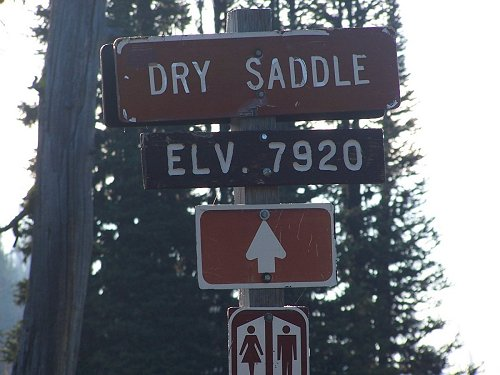 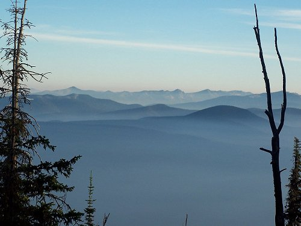 The road remained high across Dry Saddle where the vista there was stunning.
 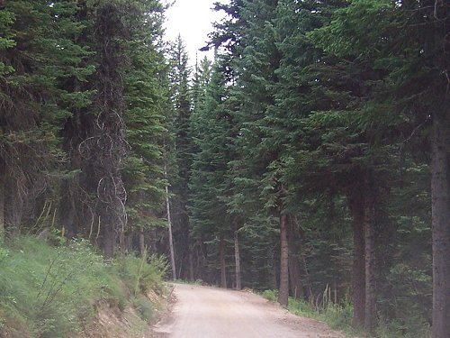 The road dropped steeply from Dry Saddle, with a very steep and narrow road, then leveled out along Sabe creek.
There were several signs down near Sabe creek and Jared and I took a picture of ourselves near one of them, before climbing towards Salmon Mountain.
On the steep climb up to Horse Heaven Saddle and Salmon Mountain, we blew a tire. Thereafter, the vistas were again very beautiful.
Once over the divide at Salmon Mountain, we started down again, reaching Observation Point and the Magruder Massacre Sign.
  After Observation point, the road slowly began to improve somewhat, not as steep or rocky, as we dropped down towards the Selway River. Once we dropped into the Selway River valley, the road became much better. We came to Magruder Crossing and the bridge over the Selway there. This was as far as I had gotten 12 years before when coming here from the Montana side at that time. After crossing, we took the short side road to Magruder Ranger Station and stayed around there for quite some time talking to some of the other travelers...none of which had come across the Magruder Corridor. Although isolated, Magruder Station is a relatively well visited and well kept station. Since leaving Granite Springs campground the day before, we had only passed three other vehicles on the whole length of the wilderness road. After spending time at the Magruder Ranger Station, we started out again into the Bitterroot Mountains towards Nez Perce Pass.
The road improved as we approached the Selway and the Selway bridge at Magruder Crossing.
We crossed the Selway at the same place I had found the road closed 12 years earlier, and then proceeded along the river towards the Ranger Station.
The Magruder Ranger Station is well kept and visited by many travelers coming down the Montana side, and those of us coming across Magruder Corridor.
After leaving Magruder Ranger Station, we still had fifty miles to go to get to Darby, leaving the Selway River behind. The final stretch of the Magruder Corridor road took us over Nez Perce Pass in the Bitterroot Mountains into Monatana and on to Darby. This portion of the road was in very good shape, with stretches of paved road over the pass and then later before reaching west Fork Station south of Darby. The ten miles of paved road over the pass was completed in the 1970s in anticipation of opening the area to logging, before the Wilderness Acts of congress made is economically unfeasable. It is interesting to come off of a wilderness road, fifty miles from nowhere, get on ten miles of nicely paved roads, only to go back to gravel for many miles again along the Nez Perce trace in Montana.
Approaching Nez Perce Pass, the road became paved over the top of the pass (at 6587 feet).
On the other side of the pass, the pavement ended while traveling through beautiful Bitterroot Mountain scenery.
Fifteen or more miles from Darby, the pavement picked up again, leading to the last sign on the trip just before West Fork Ranger Station.. Once leaving Darby, we still had a beautiful trip through Montana and Idaho home, traveling south along US 93 over Lost Trail Pass into Idaho, and then following the Salmon River south through Salmon and Challis, and then on up to Stanley and the majestic Sawtooh Mountains. There we turned west towards Banner Summit, over the top there and then down into the Payette River drainage and home. A wonderful two day trip (and a full one) which really deserves at least a week or more of time.
After crossing into Idaho over Lost Trail Pass, we followed the Salmon River south to Challis.
At Stanley we passed the majestic Sawtooth Mountains on the way to Banner Summit.
The backside of the Sawtooths are equally majestic and we dropped into the Payette River drainage towards home.
We arrived home in time fot another beautiful Idaho sunset. PS NOTE: A few months after making that trip in 2007, I upgraded my ride to a dark charcoal Chevy 1500 Z71, crew cab 4X4. It has a Flowmaster twin pipe exhaust system, is running 10 ply on/off road tires, Westin tube step-side runners, sports a Ranch Hand Summit bumper replacement deer guard, and a Ranch Hand lourvered headache rack. Nice video at the following link:
 YOUTUBE Video: Ranch Hand Summit bumper replacement
|
CLICK HERE TO RETURN TO:

Site, material, & designs Copyright © 2007-2010 by Jeff Head, All Rights Reserved.
Magruder Corrider Hit count:

JEFFHEAD.com Hit Count:
free hit counter